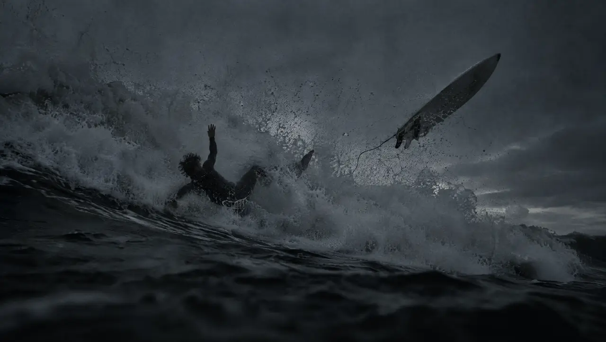
Out past the break.
Your phone is on the towel.
AI-generated scene
€199 for the hub. Pre-order opens in 2027.

Your phone is on the towel.
AI-generated scene
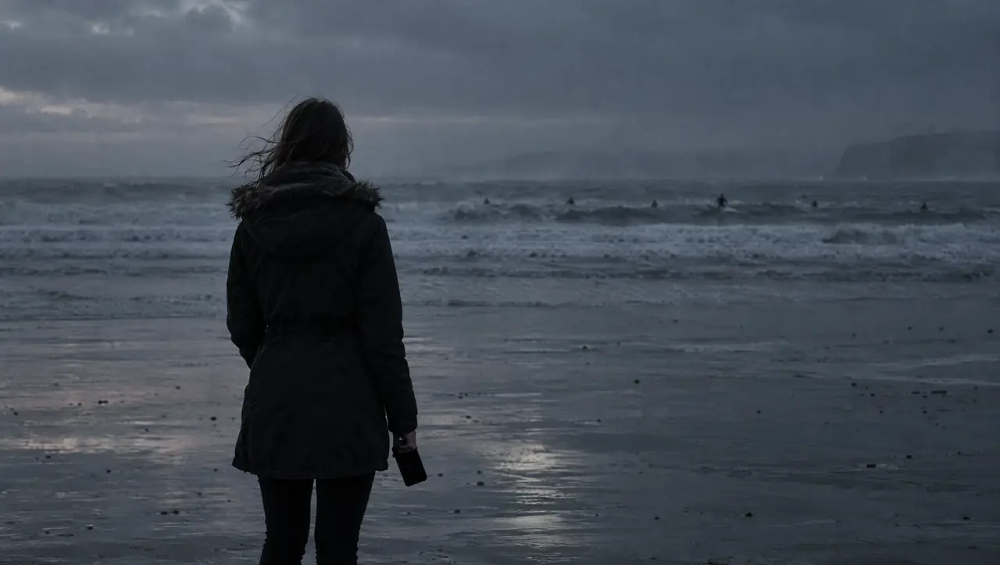
You can't hear her.
AI-generated scene
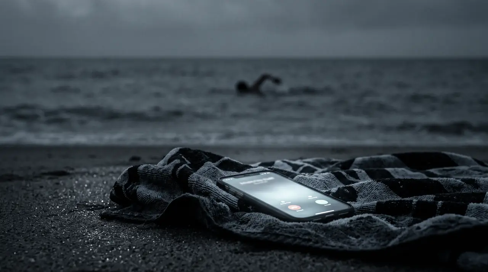
You're two kilometres out.
AI-generated scene
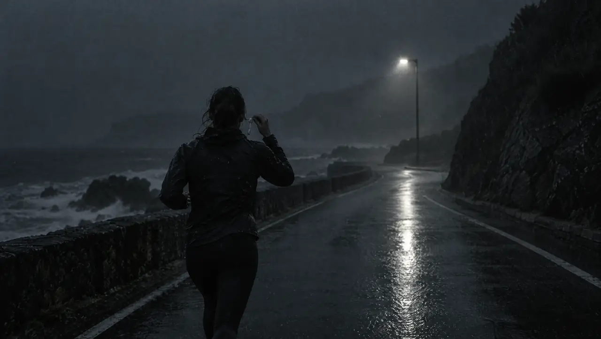
The phone is out of range.
AI-generated scene
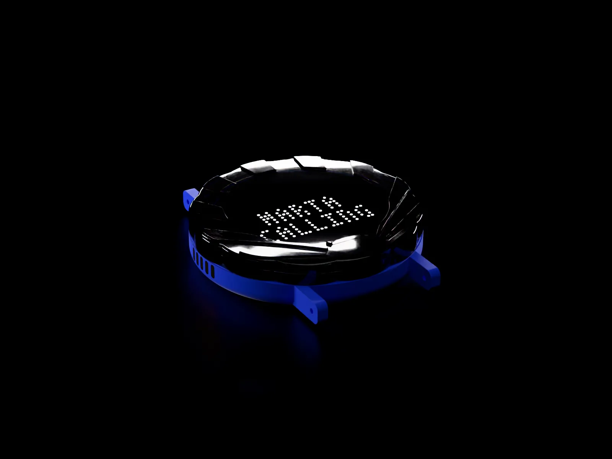
A cellular hub the size of a watch face, built for salt water. Calls, help and music: your Bluetooth earbuds on land, a waterproof wired headset in the water.
€199 for the hub. Pre-order opens in 2027.
Render from our CAD; the lit dots are drawn by this page. Final design, in development.
Your position goes with the call . Press the top to answer , and only the people you name get through .
With the phone at home, your music plays in the earbuds you already own, a waterproof wired headset takes over in the water, and you send a message or a note by voice.
Buy now €199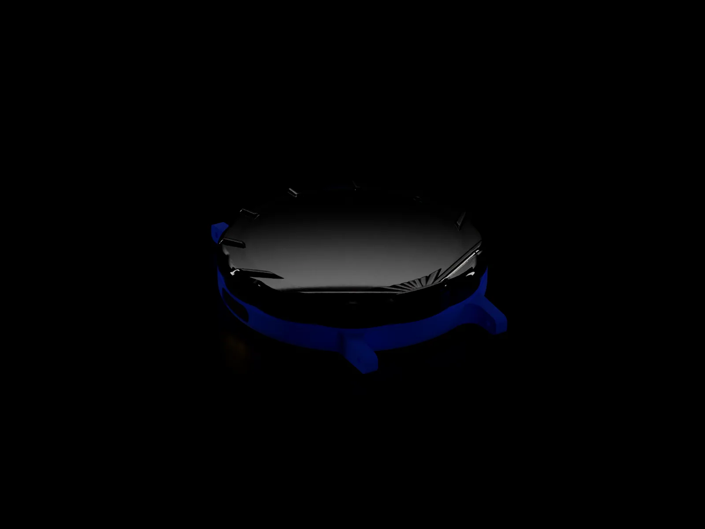
You're two kilometres out.
AI-generated scene
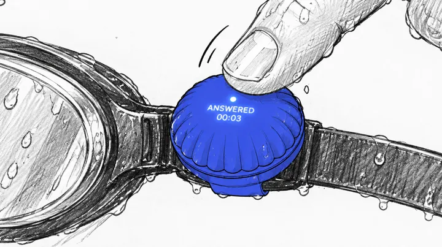
You can't hear her.
AI-generated scene
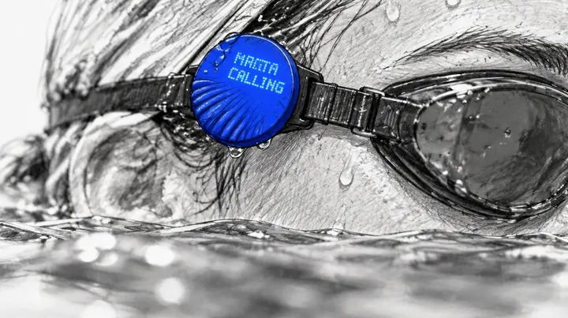
You use it without looking, with wet hands or gloves on.
Hold it to call for help. Your position goes with the call.
Press the top to answer or hang up. It moves 0.28 mm under your finger, and you feel the click through a glove.
Turn it for volume, the next track or your PIN. Twenty-four clicks a turn, so you count by feel.
Two lugs take any 20 mm strap: your watch strap, a goggle strap, a collar, a bag. The display stays dark until someone calls.
Drawing to scale from our design files, seen from above.
No stop for the phone: the hub moves from your goggle strap to your wrist.
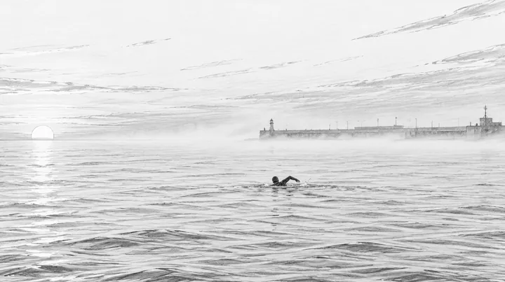
On the goggle strap, with a wired headset on the pads.
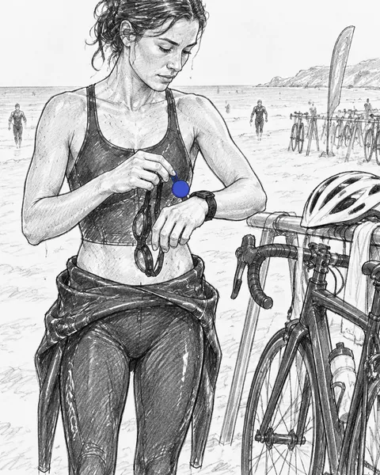
Off the goggle strap, onto your watch strap.
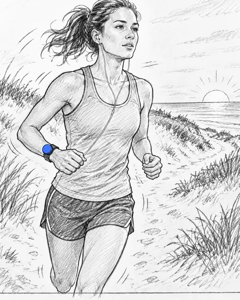
Bluetooth to your earbuds. The phone is still at home.
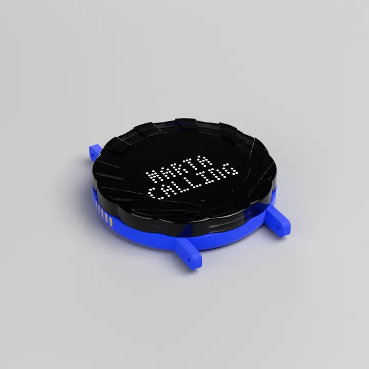
The same two lugs fit a goggle strap, a watch strap or a collar.
First three pictures: AI-generated scenes, based on renders of our CAD. Last picture: render from our CAD.
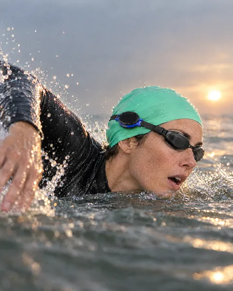
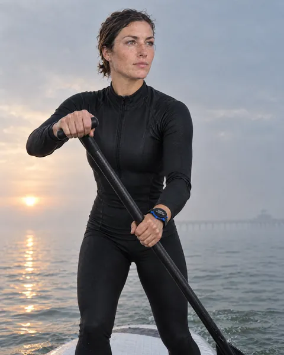
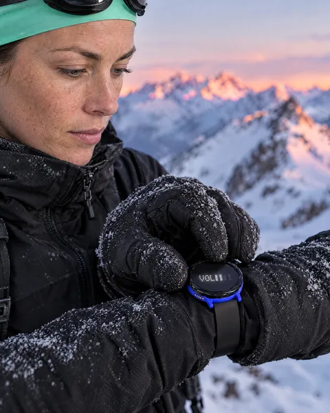
| Sport | Where it sits | How you hear it |
|---|---|---|
| Open water | Goggle strap or wetsuit collar | A waterproof wired headset on the pads |
| Triathlon | Goggle strap for the swim, wrist for the run | Wired in the water, Bluetooth on land |
| Surf | Wetsuit collar | Wired in the lineup, Bluetooth on the beach |
| Stand-up paddle | Wrist or a vest strap | Bluetooth earbuds, or wired if you fall in a lot |
| Trail run | Wrist or a pack strap | Bluetooth earbuds |
| Ski tour | Wrist, over the jacket cuff | Bluetooth earbuds under the hood; turn the top with gloves on |
The three pictures are AI-generated scenes, based on renders of our CAD.
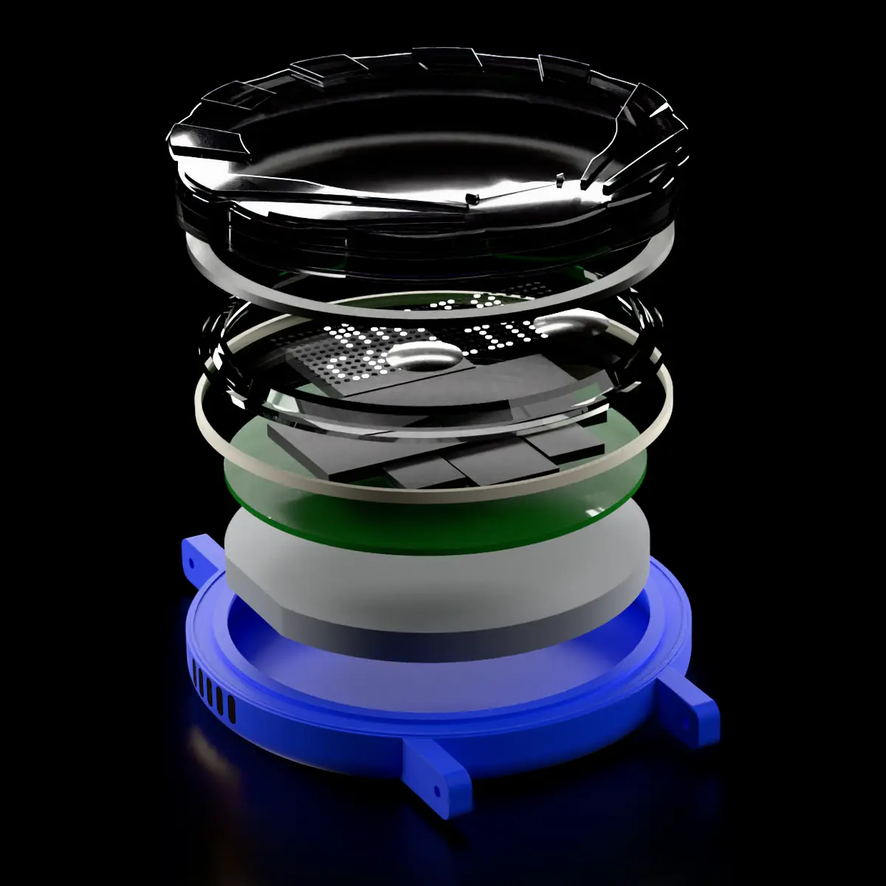
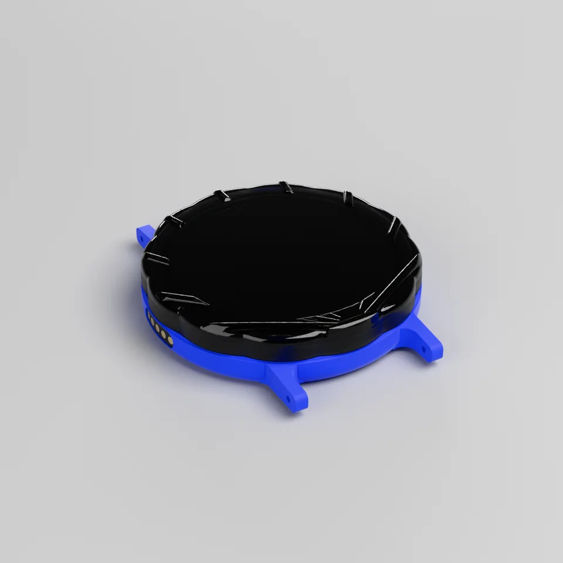
Final design, in development. Figures marked estimate or target are not yet measured.
| Diameter | Ø42 mm, 50 mm from lug tip to lug tip |
|---|---|
| Thickness | 9.86 mm at the top of the dome Estimate; 10.19 mm at worst |
| Weight | About 26 g Estimate; target under 30 g |
| Top | The whole top presses and turns, 24 clicks a turn. A smoked black dome with a scalloped rim and ribs. Number of lobes being chosen |
| Display | 31 × 11 white LED dots behind the smoked top: two lines of text, dark when there is nothing to say |
| Strap | Two lugs for any 20 mm strap |
| Audio and charging | Five flush magnetic pads at 9 o'clock for a wired headset and the charger. An adapter to a 3.5 mm plug comes in the box. |
| Mobile network | Its own eSIM (LTE-M); calls go over the internet Data plan priced separately before pre-order |
|---|---|
| Location | GPS (GNSS); your position goes with a call for help |
| Bluetooth | Bluetooth 5.4 to your earbuds or headphones on land |
| Voice | Call, play, note. Only the people you name get through. |
| Water | IPX8: 3 m for 2 h in salt water, plus a 96 h salt-spray test Target, not yet certified |
| Battery | About 4 h of calls per charge; music from the hub's own memory lasts much longer Estimate, not measured |
| Price | €199 for the hub. The eSIM plan and a water headset cost extra. |
Pre-order opens in 2027. Today it is a waitlist.
Hardware only, and nothing to pay now. The eSIM data plan costs extra and gets its price before pre-order. A waterproof headset for the water is not included. Leave your email and we write when pre-order opens.
Buy now €199A cellular watch costs like a phone (SE 3 cellular €329, Ultra 3 €899), does more than you need, ties you to one phone brand and fails wet: the touchscreen stops working and the microphone floods. Seashell works in salt water by clicks, costs €199 for the hub, and works with any phone and, on land, any Bluetooth earbuds.
Radio does not travel through water, for any device. Seashell is worn above the waterline, on a collar, a cap, a goggle strap or the wrist, and reconnects when it surfaces. In the water the sound goes through a waterproof wired headset on the magnetic pads. We test the link at sea in January 2027 and publish what we find.
Keep them. Seashell adds what they cannot do: answer and call wet, be reachable with the phone at home, sound in the water. Bluetooth to your earbuds on land, cable in the water, next to the watch you train with.
Only the people you name get through. Seashell says who is calling and shows the name on two lines of text; there is no touchscreen and no feed to pull you in. Everyone else waits until you are back.
No. The whole top is a button you press without looking, with gloves, wet. Press it to answer, turn it to skip, set the volume or type a PIN. Voice is there for when your hands are busy.
It replaces the phone in your sport and the cellular watch you would otherwise buy, for less than either. €199 is the hub alone, and nothing is paid before pre-order opens. The eSIM data plan is priced separately and published before pre-order. A waterproof headset for the water is not included.
About 4 hours of calls over Bluetooth per charge, a little more with a wired headset. Music played from the hub's own memory lasts much longer; streamed music lasts about as long as a call. These are our estimates from the parts, not measurements. We publish measured hours after the prototype tests.
Pre-order opens in 2027, after the sea test and the supplier quotes. The waitlist takes an email only; nothing is charged.
Not yet. The design target is IPX8: 3 m for 2 h in salt water, plus a 96 h salt-spray test. CE marking comes before the first batch.
William Roskaer and Pau Adell (Seashell, TU Delft) store it with the time you signed up, your browser and the page you came from, only to send launch news. It sits on Supabase servers in the EU (Ireland), on the basis of your consent, for at most two years. Nothing is sold or passed on. To see or delete your data, write to contact@sportseashell.com. You can also complain to your data protection authority.
Seashell is William Roskaer and Pau Adell, in TU Delft's Build Your Start-up course. Before drawing anything we asked 26 athletes how they train without a phone. Six of their answers are here, without names.
Interviews in September and October 2026. Quotes from Spanish and Catalan are our translations; fillers are left out, … marks words cut and [ ] words added.
“I carry it just in case, for safety, to be connected, in case someone has something urgent or I need to call someone. But not to use it.”